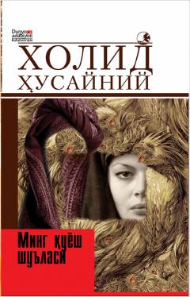

MQUrush girdobidagi ikki afg'on ayolning bardosh va muhabbat haqidagi fojiaviy hikoyasi.
Bu roman afg'on-amerikalik yozuvchi Xolid Husayniyning 2007-yilda jahon bestselleri bo'lgan ikkinchi asarining o'zbek tilidagi tarjimasi. Roman Afg'onistondagi urush va zulm sharoitida yashagan ikki ayol — Maryam va Laylo — ning fojiali, ammo umidga to'la hayotini tasvirlaydi. Asar tinchlikning qadri, muhabbat va insoniy bardosh mavzularini chuqur his-tuyg'u bilan yoritadi.